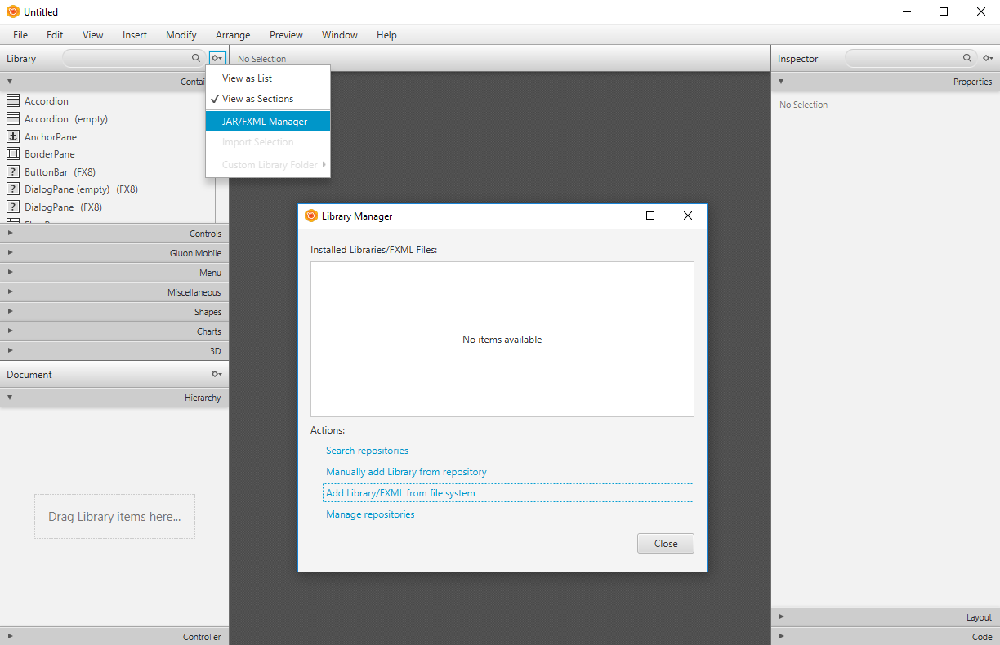
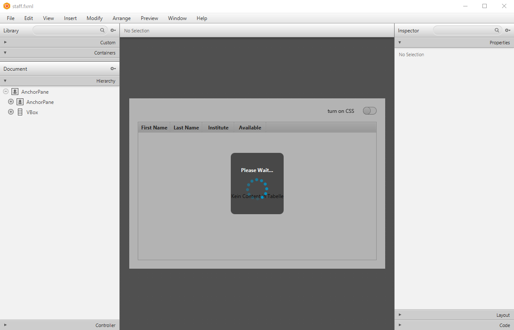

This Nutshell example exploits a third party shared library called "ControlsFX", which is an open source project that aims to provide additional high quality GUI controls to JavaFX. You can find the ControlsFX license agreement here: license.txt.
You can get the latest version of ControlsFX here: http://fxexperience.com/controlsfx/. As of 2017-09-24 this nutshell example (staff) uses ControlsFX version 8.40.14 for Java 1.8/8 and version 9.0.0 for Java 9 and later. This example demonstrates the usage of the following JavaFX GUI classes:
This application consists of a TableView with predefined data. You can change the data by clicking on items of the BreadCrumbBar located at the top right corner of the window. By activating the TableRowExpanderColumn marked with a "+" in the table a Rating bar shows up to rate each employee. Every user interaction in the staff nutshell example is followed either by the MaskerPane appearing or a Notification.
To start this Application, the JAR file "controlsfx-8.40.18.jar" (Java 8) or
"controlsfx-11.1.1.jar" (Java 11 or later), both located in the
"jar&auto; subdirectory, has to be added to the Java environmental variable CLASSPATH in order for
the Java runtime to find its classes.
The staff application provides a way to do this on-the-fly using one of the following files:
.rex):
CLASSPATH appropriately:
run_on_java_8.cmd for Windows
run_on_java_8.sh for Linux and MacOS
CLASSPATH appropriately:
run_on_java_11_or_later.cmd for Windows
run_on_java_11_or_later.sh for Linux and MacOS
jar/controlsfx-8.40.18.jar |
Java archive containing the ControlsFX JavaFX GUI controls for Java 8. |
jar/controlsfx-11.1.1.jar |
Java archive containing the ControlsFX JavaFX GUI controls for Java 11 or later. |
css/style.css |
The style sheet for this application |
fxml/put_FXID_objects_into.my.app.rex |
Rexx utility program that saves all JavaFX objects of the FXML-file globally for Rexx. |
fxml/staff.fxml |
FXML file defining the JavaFX GUI. |
fxml/staffController.rxj |
Rexx program serving as the controller. |
images/bsf4oorexx_032.png |
The image representing the BSF4ooRexx logo used as the application icon. |
jar/license.txt |
ControlFX license. |
index.html |
The standard BSF4ooRexx sample description file. |
readme.html |
This file. |
staff.rex |
The Rexx program that determines the Java version and
sets CLASSPATH accordingly and then runs
staff application program staff.rxj.
|
staff.rxj |
The Rexx staff application program. |
SceneBuilder is an open-source tool for creating and modifying FXML files. It is also possible to inject third party java archives that import additional components to SceneBuilder. Simply go to the left side pane called "Library" and open the "Library Manager" by clicking on the gearwheel symbol as shown in the Screenshot below. Using this form you can add various JavaFX components from jar files and make them persistently available to your JavaFX application in SceneBuilder. After importing components, they are instantly available for use.

The following Screenshot shows the fxml file used in this nutshell example after importing the necessary java components.

Author: Adrian Baginski
Date of Creation: 2017-03-20
Updated 2018-03-17 - 2022-08-09 by Rony G. Flatscher